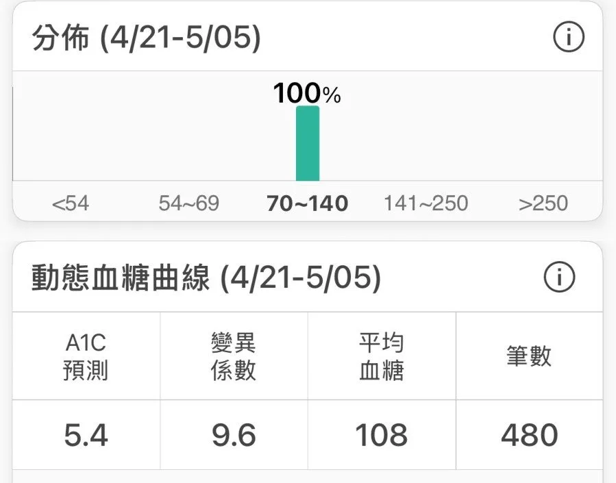

比 HbA1c 更準確的指標，血糖變異係數

我以前也是一個吃麵包血糖就會到 190 的人。吃白飯血糖會明顯上升，吃地瓜甚至超過 200。所以我很清楚那種感覺，每次想吃個澱粉就要先在心裡做一遍利弊計算。
最近比較少看到我貼血糖圖，不是停用了，而是因為曲線平穩到一個程度，貼出來反而沒戲劇性，甚至會讓讀者誤以為「他大概是在亂量」。整趟瑞士旅遊，巧克力鍋、貝果塗厚奶油、義大利麵、甜點照吃，曲線都接近水平，這種圖反而沒有教學意義，貼出來也說服不了任何人。
所以這篇我想換個角度來談，介紹一個比 HbA1c 更能說明血糖健康狀態的指標：血糖變異係數（Coefficient of Variation, CV）。
HbA1c 反映的是過去 2 到 3 個月的平均血糖，但它看不到波動。兩個人同樣是 HbA1c 5.6%，一個整天血糖在 90 到 110 之間，另一個在 60 到 200 之間反覆震盪，平均一樣，但對血管的傷害完全不同。幾個大型試驗（ACCORD、ADVANCE、VADT）把糖尿病患者的 HbA1c 強制壓到接近正常，心血管事件不但沒有改善，部分試驗甚至增加了死亡率。原因之一，就是 HbA1c 把波動的代價掩蓋掉了。
CV 的計算是把血糖標準差除以平均血糖再乘以 100%，它不會因為你的平均血糖比較高就跟著偏大，而是純粹反映波動幅度。目前最常被引用的國際標準是 CV ≤ 36%，但這個數字是從糖尿病患者身上推導出來的，是篩出高風險的門檻，不是健康人應該追求的目標。用 36% 當及格線，等於是拿糖尿病患者的低標要求自己。
這裡有一個很重要的事情要說清楚：CV 這個指標，一般血糖機是量不出來的。血糖機是點狀測量，一天量個幾次，根本沒辦法計算出一整天連續的標準差和平均值。要拿到有意義的 CV，唯一的方式是佩戴CGM（連續血糖監測儀，continuous glucose monitor），讓它在一段時間內連續記錄數值，再由 APP 幫你計算。這也是為什麼我一直覺得，對自己代謝健康認真的人，很值得花一段時間戴一下 CGM，不是為了恐慌，而是為了真正看懂自己的身體在不同飲食和生活方式下的反應。
實際上，健康非糖尿病者的 CV 大概在哪裡？Shah 等人 2019 年在 JCEM 追蹤 153 名健康成人，CV 平均是 17 ± 3%。PREDICT 研究（超過 4,000 名無糖尿病者）的中位數是 14.8%。我自己訂的個人目標是CV < 15%，對應的是健康族群的中位數，不是糖尿病患者的篩查門檻。
這趟旅遊期間用智抗糖串接 CGM 全程監測，CV 是 9.6%。這個數字不是靠刻意避開澱粉換來的，我自己歸納出四個對我個人有效的因素。
1. 長期提高肌肉量。骨骼肌是全身最大的葡萄糖儲存槽，胰島素刺激下的全身葡萄糖處理有 80% 由骨骼肌負責，肌肉量夠，餐後血糖吸收得快，峰值自然壓低。
2. 每天8,000 步以上。餐後走路能直接壓低血糖峰值，長期維持也有助於提升胰島素敏感度（insulin sensitivity）。這趟旅遊很多天超過一萬五千步。
3. 第一餐在中午 12 點以後。整個上午讓血糖和胰島素都維持在低基線，中午進食時的胰島素敏感度會更好，餐後血糖反應比早上吃要平緩。間歇性斷食（intermittent fasting，16:8）不是對每個人都有效，但對我的數據來說是有差的。
4. 澱粉集中在同一餐。我不會整天分散吃澱粉，大部分集中在一餐解決。讓胰島素一次升高、處理完後回落到基線，比整天讓胰島素持續在中等水平，對胰島素敏感度的維護更有利。
回到開頭的問題。當血糖曲線這麼平穩，貼「吃了貝果、血糖升 20 然後回落」的圖對讀者沒有幫助，沒戲劇性，說服力也不夠。真正有教學意義的是大起大落的時刻，吃什麼會爆、怎麼組合能緩衝，那是 CGM 最有價值的使用方式。日常的平穩數據，對我來說是自己的內部指標，不需要每次都貼出來。
CGM 不是用來表演血糖有多穩的工具，而是用來校準生活方式的工具。9.6% 的背後，是肌力訓練、走路，和長期對自己代謝狀態保持好奇的習慣。
參考資料
（本文由我規劃架構與觀點，並協同 AI 校正與潤飾語句）
 空腹小雞跟思思醫師一起斷食，順便養一隻小雞來養小雞 →
空腹小雞跟思思醫師一起斷食，順便養一隻小雞來養小雞 →
好朋友週信
一週一封：《健康駭客週報》這集的研究重點，加上家醫專欄這週的新文章。免費，隨時可以退訂。
延伸閱讀

零碳水的人，可能也忽略的一個細節
身體無『必需碳水化合物』分類但非完全無需，紅血球無粒線體只代謝葡萄糖，人類AMY1澱粉酶基因演化中持續複製說明身體對醣的適應需求。

鯖魚斷食，和傳統斷食差在哪裡
魚斷食透過高蛋白保肌肉、高Omega-3啟動FGF-21和脂肪燃燒，進入類斷食代謝狀態卻難達深層自噬，相比水斷食各有不同機轉側重。

每週兩罐沙丁魚，逆轉你的代謝問題
2021 年隨機對照試驗中，糖尿病前期長者每週多吃兩罐沙丁魚，一年後 FINDRISC 極高風險比例由 37.3% 降到 7.7%，胰島素阻抗也下降。